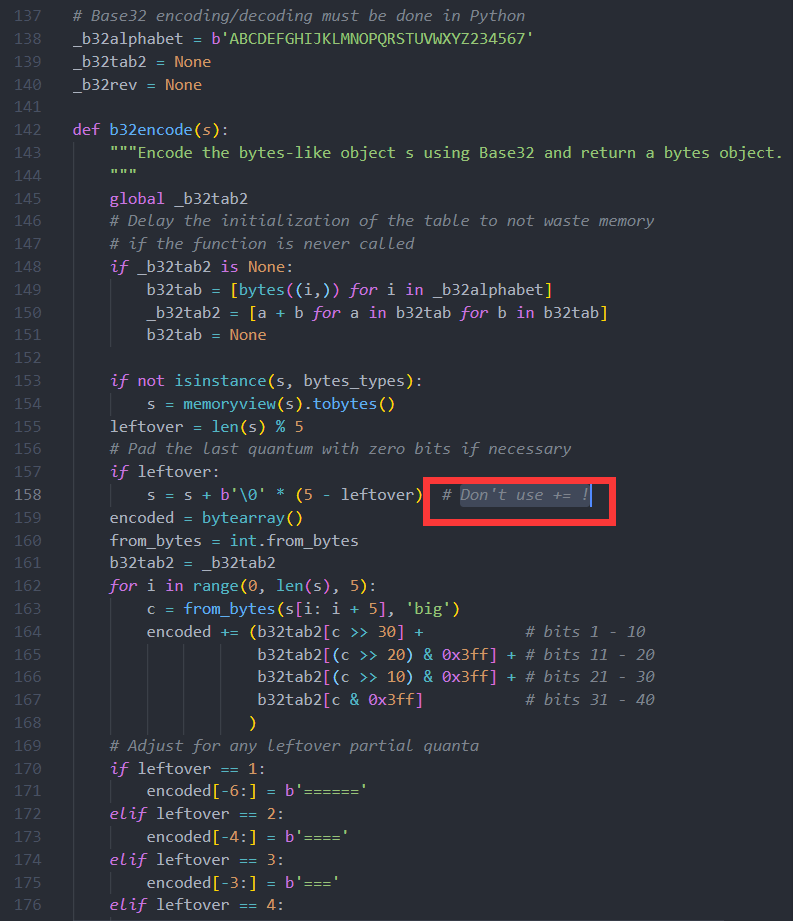
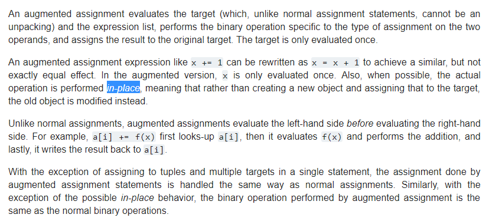
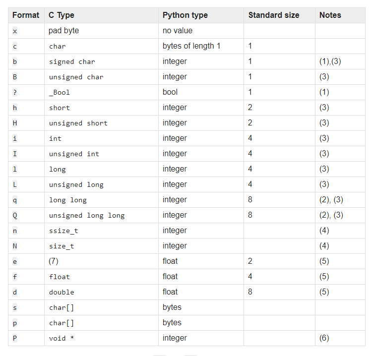

Notes on PythonTutorialChap 1Chap 2Chap 3Chap 4DocstringFunction AnnotationsCoding StyleChap 5ListsThe del statementChap 6Chap 7Chap 8Chap 9LibraryBUILT-IN FUNCTIONSBUILT-IN CONSTANTSConstants added by the site moduleBUILT-IN TYPESTruth Value TestingBoolean Operations --- and, or, notCamparisonsNumeric Types --- int, float, complexOperations:Bitwise operations(integer only):Additional Methods on Integer TypesAdditional Methods on FloatIterator TypesSequence Types --- list, tuple, rangeCommon Sequence Operations: Immutable Sequence TypesMutable Sequence TypesListsTuplesRangesText Sequence Type --- strBinary Sequence Types --- bytes, bytearray, memoryviewBytes ObjectsBytearray ObjectsBytes and Bytearray OperationsMemory ViewsSet Types --- set, frozensetMapping Types --- dictDictionary view objectsContext Manager TypesOther Built-in TypesSpecial AttributesBUILT-IN EXCEPTIONSBase classesConcrete exceptionsOS exceptionsWarningsstring --- Common string operationsString constantsFunctionsTemplate stringsFormat String Syntaxbase64 --- Base16, Base32, Base64, Base85 Data Encodingsre --- Regular expression operationsos --- Miscellaneous operating system interfacesitertools --- Functions creating iterators for efficient loopingrandom --- Generate pseudo-random numbersstruct --- Interpret bytes as packed binary datamath --- Mathematical functionssecrets --- Generate secure random numbers for managing secretsdatetime --- Basci date and time typescollections --- Container datatypesChainMap ObjectsCounter Objectsdeque Objectsdefaultdict Objectsnamedtuple() -- Factory Function for Tuples with Named FieldsOrderedDict ObjectsUserDict ObjectsUserList ObjectsUserString ObjectsOther Modulesprimefac moduleTL;DRPropertyModule UsageCommand-Line UsageIPythonShortcutsMagic Commands
Python is extensible
python -c command [arg] ...
python -m module [arg] ...
-i run the script and enter interactive mode afterwards
By default, Python source files are treated as encoded in UTF-8.
1# !/usr/bin/env python32# -*- coding: xxx -*-`
Loop statements may have an
elseclause; it is executed when the loop terminates through exhaustion of the list (withfor) or when the condition becomes false (withwhile), but not when the loop is terminated by abreakstatement.
The default values are evaluated at the point of function definition in the defining scope
x1i = 523def f(arg=i):4 print(arg)56i=67f()8# output: 5*, **, *args, **kwargs: https://www.agiliq.com/blog/2012/06/understanding-args-and-kwargs/
__doc__ special attribute of that object."""triple double quotes""" around docstrings. Use r"""raw triple double quotes""" if you use any backslashes in your docstrings. For Unicode docstrings, use u"""Unicode triple-quoted strings""".PEP 484 (unfinished)
4 spaces for indentation
Limit all lines to a maximum of 79 characters.
Surround top-level function and class definitions with two blank lines.
Method definitions inside a class are surrounded by a single blank line.
Extra blank lines may be used (sparingly) to separate groups of related functions. Blank lines may be omitted between a bunch of related one-liners (e.g. a set of dummy implementations).
Use blank lines in functions, sparingly, to indicate logical sections.
Imports are always put at the top of the file, just after any module comments and docstrings, and before module globals and constants.
Imports should be grouped in the following order:
You should put a blank line between each group of imports.
Wildcard imports (from module import *) should be avoided.
Always make a priority of keeping the comments up-to-date when the code changes!
Comments should be complete sentences. The first word should be capitalized, unless it is an identifier that begins with a lower case letter (never alter the case of identifiers!).
You should use two spaces after a sentence-ending period in multi-sentence comments, except after the final sentence.
When writing English, follow Strunk and White.
Python coders from non-English speaking countries: please write your comments in English
Inline comments should be separated by at least two spaces from the statement.
Modules should have short, all-lowercase names.
Class names should normally use the CapWords convention.
Because exceptions should be classes, the class naming convention applies here.
The conventions of global variable names are about the same as those for functions.
Function names should be lowercase, with words separated by underscores as necessary to improve readability.
Constants are usually defined on a module level and written in all capital letters with underscores separating words.
Always use a def statement instead of an assignment statement that binds a lambda expression directly to an identifier.
Be consistent in return statements.
Use string methods instead of the string module.
Use ''.startswith() and ''.endswith() instead of string slicing to check for prefixes or suffixes.
Object type comparisons should always use isinstance() instead of comparing types directly.
For sequences, (strings, lists, tuples), use the fact that empty sequences are false.
You might have noticed that methods like
insert,removeorsortthat only modify the list have no return value printed – they return the defaultNone. This is a design principle for all mutable data structures in Python.
List Comprehensions
xxxxxxxxxx101>>> a = [-1, 1, 66.25, 333, 333, 1234.5]2>>> del a[0]3>>> a4[1, 66.25, 333, 333, 1234.5]5>>> del a[2:4]6>>> a7[1, 66.25, 1234.5]8>>> del a[:]9>>> a10[]Note that multiple assignment is really just a combination of tuple packing and sequence unpacking.
Dictionaries are indexed by keys, which can be any immutable type; strings and numbers can always be keys. Tuples can be used as keys if they contain only strings, numbers, or tuples; if a tuple contains any mutable object either directly or indirectly, it cannot be used as a key.
When looping through dictionaries, the key and corresponding value can be retrieved at the same time using the
items()method.
When looping through a sequence, the position index and corresponding value can be retrieved at the same time using the
enumerate()function.
To loop over two or more sequences at the same time, the entries can be paired with the
zip()function.
To loop over a sequence in reverse, first specify the sequence in a forward direction and then call the
reversed()function.
To loop over a sequence in sorted order, use the
sorted()function which returns a new sorted list while leaving the source unaltered.
A module is a file containing Python definitions and statements.
For efficiency reasons, each module is only imported once per interpreter session. Therefore, if you change your modules, you must restart the interpreter – or, if it’s just one module you want to test interactively, use
importlib.reload(), e.g.import importlib; importlib.reload(modulename).
To speed up loading modules, Python caches the compiled version of each module in the
__pycache__directory under the namemodule.version.pyc, where the version encodes the format of the compiled file; it generally contains the Python version number.
The built-in function dir() is used to find out which names a module defines. It returns a sorted list of strings:
Another explicit tutorial on modules and packages
When an exception occurs, it may have an associated value, also known as the exception’s argument.
The
withstatement allows objects like files to be used in a way that ensures they are always cleaned up promptly and correctly.
A namespace is a mapping from names to objects. Most namespaces are currently implemented as Python dictionaries.
Use the word attribute for any name following a dot. References to names in modules are attribute references. Attributes may be read-only or writable. Namespaces are created at different moments and have different lifetimes.
The local namespace for a function is created when the function is called, and deleted when the function returns or raises an exception that is not handled within the function. (Actually, forgetting would be a better way to describe what actually happens.) Of course, recursive invocations each have their own local namespace.
A scope is a textual region of a Python program where a namespace is directly accessible.
To rebind variables found outside of the innermost scope, the
nonlocalstatement can be used; if not declared nonlocal, those variables are read-only.
Assignments do not copy data — they just bind names to objects. The same is true for deletions.
Class objects support two kinds of operations: attribute references and instantiation.
Attribute references use the standard syntax used for all attribute references in Python:
obj.name.
Class instantiation uses function notation. The instantiation operation (“calling” a class object) creates an empty object. When a class defines an
__init__()method, class instantiation automatically invokes__init__()for the newly-created class instance.
The only operations understood by instance objects are attribute references. There are two kinds of valid attribute names, data attributes and methods. data attributes correspond to “instance variables” in Smalltalk, and to “data members” in C++.
In general, calling a method with a list of n arguments is equivalent to calling the corresponding function with an argument list that is created by inserting the method’s instance object before the first argument. Generally speaking, instance variables are for data unique to each instance and class variables are for attributes and methods shared by all instances of the class.
Data attributes override method attributes with the same name
Each value is an object, and therefore has a class (also called its type). It is stored as
object.__class__.
7.26
7.27
Ture unless __bool__() returns False or __len__() returns zero.
None and False| Opeartion | Result |
|---|---|
| x or y | if x is false, then y, else x |
| x and y | if x is false, then x, else y |
| not x | if x is false, then True, else False |
<, <=, >, >=, ==, !=, is, is not
+, -, *, /, //, %, -x, +x, abs(), int(), float(), complex(), c.conjugate(), divmod(x, y), pow(x, y), x ** y
|, ^, &, <<, >>, ~
String Methods
printf-style String Formatting
7.28
Bytes objects actually behave like immutable sequences of integers, with 0 <= x < 256
printf-style Bytes Formatting
memoryview objects allow Python code to access the internal data of an object that supports the buffer protocol without copying.
class memoryview(obj)
methods:
readonly attributes
class set([iterable]) class frozenset([iterable])
operations:
Set elements, like dictionary keys, must be hashable.
operations available only for set:
A mapping object maps hashable values to arbitrary objects.
operations:
The object returned by dict.keys(), dict.values() and dict.items() are view objects.
set-like
Python's with statement supports the concept of a runtime context defined by a context manager.
Modules
Classes and Class Instances
Functions
Methods
Methods are functions that are called using the attribute natation.
Code Objects
Type Objects
The Null Object
The Ellipsis Object
The NotImplemented Object
Boolean Values
Internel Objects
7.29
In Python, all exceptions must be instances of a class that derives from BaseException.
exception BaseException
The base class for all built-in exceptions.
exception Exception
All built-in, non-system-exiting exceptions are derived from this class.
exception ArithmeticError
exception BufferError
exception LookupError
exception AssertionError
exception AttributeError
exception EOFError
exception FloatingPointError
exception GeneratorExit (derived from BaseException)
exception ImportError
exception ModuleNotFoundError
exception IndexError
exception KeyError
exception KeyboradInterrupt
exception MemoryError
exception NameError
exception NotImplementedError
In user defined base classed, abstract methods should raise this exception when they require derived classes to override to the method, or while the class is being developed to indicate that the real implementation still needs to be added.
exception OSError([arg]) exception OSError(errno, strerror[, filename[, winerror[, filename2]]])
exception OverflowError
exception RecursionError
exception ReferenceError
exception RuntimeError
exception StopIteration
exception StopAsyncIteration
exception SyntaxError
exception IndentationError
exception TabError
exception SystemError
exception SystemExit
exception TypeError
exception UnboundLocalError
exception UnicodeError
exception UnicodeEncodeError
exception UnicodeDecodeError
exception UnicodeTranslateError
exception ValueError
exception ZeroDivisionError
exception EnviromentError
exception IOError
exception WindowsError
whitespace
\t\n \r\v\f
ascii_lowercase
ascii_uppercase
ascii_letters
digits
hexdigits
octdigits
punctuation
printable
printable = digits + ascii_letters + punctuation + whitespace
[False] * 3 == [s.isprintable() for s in "\r\v\f"]
capwords(s, sep=None)
similar to
str.title()if sep=None
$-based substitutions
class string.Template(template)
Advanced usage: you can derive subclasses of Template to custiomize the placeholder syntax, delimiter character, or the entire regular expression uesd to parse template strings. To do this, you can override these class attributes: - delimiter - idpattern - braceidpattern - flags Alternatively, you can provide the entire regular expression pattern by overriding the class attribute pattern.
https://www.youtube.com/watch?v=vTX3IwquFkc
Format strings contain "replacement filelds" surrounded by curly braces
{}.
Beacuse arg_name is not quote-delimited, it is not possible to specify arbitrary dictionary keys(e.g., the strings
'10'or':-]') within a format string.
Conversion flags: '!s' calls str() on the value, '!r' calls repr() and '!a' calls ascii().
A format_spec field can also include nexted replacement fields within it. But deeper nesting is not allowed.
The RFC 3548 encodings are suitable for encoding binary data so that it can safely sent by email, used as parts of URLs, or included as part of an HTTP POST request.
encoding: bytes-like objects -> ASCII bytes decoding: bytes <- bytes-like objects / strings (containing ASCII)
The modern interface:
base64.b64encode(s, altchars=None)
Optional altchars must be a bytes-like object of at least length 2 (additional characters are ignored) which specifies the alternative alphabet used instead of the
+and/characters.
base64.b64decode(s, altchars=None, validate=False)
A binascii.Error exception is raised if s is incorrectly padded.
If validate is
False(the default), characters that are neither in the normal base-64 alphabet nor the alternative alphabet are discarded prior to the padding check. If validate isTrue, these non-alphabet characters in the input result in a binascii.Error.
base64.standard_b64encode(s)
base64.standard_b64decode(s)
base64.urlsafe_b64encode(s)
base64.urlsafe_b64decode(s)
base64.b32encode(s)
?  find a possible solution 
base64.b32decode(s, casefold=False, map01=None)
Optional casefold is a flag specifying whether a lowercase alphabet is acceptable as input. For security purposes, the default is
False.
base64.b16encode(s)
base64.a16decode(s, casefold=False)
base64.a85encode(b, *, foldspaces=False, wrapcol=0, pad=False, adobe=False)
base64.a85encode(b, *, foldspaces=False, adobe=False, ignorechars=b' \t\n\r\v')
base64.b85encode(b, pad=False)
base64.b85decode(b)
The legacy interface:
7.30
https://www.youtube.com/watch?v=K8L6KVGG-7o http://deerchao.net/tutorials/regex/regex.htm https://wiki.ubuntu.org.cn/Python%E6%AD%A3%E5%88%99%E8%A1%A8%E8%BE%BE%E5%BC%8F%E6%93%8D%E4%BD%9C%E6%8C%87%E5%8D%97
Both patterns and strings to be searched can be Unicode strings (str) as well as 8-bit strings (bytes). However, Unicode strings and 8-bit strings cannot be mixed.
Regular expressions can be concatenated to form new regular expressions; if A and B are both regular expressions, then AB is also a regular expression.
The special characters: ., ^, $, *, +, ?, *?, +?, ??, {m}, {m, n}, {m, n}?, \, [], |, (...), (?...), (?aiLmsux), (?:...), (?aiLmsux-imsx:...), (?P<name>...), (?P=name), (?#...), (?=...), (?!...), (?<=...), (?<!...), (!(id/name)yes-pattern|no-pattern), \number, \A, \b, \B, \d, \D, \s, \S, \w, \W, \Z
This module(re.py) exports the following functions:
- match Match a regular expression pattern to the beginning of a string.
- fullmatch Match a regular expression pattern to all of a string.
- search Search a string for the presence of a pattern.
- sub Substitute occurrences of a pattern found in a string.
- subn Same as sub, but also return the number of substitutions made.
- split Split a string by the occurrences of a pattern.
- findall Find all occurrences of a pattern in a string.
- finditer Return an iterator yielding a Match object for each match.
- compile Compile a pattern into a Pattern object.
- purge Clear the regular expression cache.
- escape Backslash all non-alphanumerics in a string. flags:
- A ASCII
- I IGNORECASE
- L LOCALE
- M MULTILINE
- S DOTALL
- X VERBOSE
- U UNICODE
Match Objects
Match objects always have a boolean value of True.
- Match.expand(template)
- Match.group([group1, ...])
- Match.__ getitem__(g)
- Match.groups(default=None)
- Match.groupdict(default=None)
- Match.start([group])
- Match.end([group])
- Match.span([group])
- Match.pos
- Match.endpos
- Match.lastindex
- Match.lastgroup
- Match.re
- Match.string
7.31
Infinite iterators
list(enumerate(iter)) == list(zip(itertools.count(), iter))Iterators terminating on the shortest input sequence
Combinatoric iterators
product(p, q, ... ,[repeat=1])
permutations(p[, r])
combinations(p, r)
python documentation给出了itertools.combinations函数的具体代码：
xxxxxxxxxx191def combinations(iterable, r):2 # combinations('ABCD', 2) --> AB AC AD BC BD CD3 # combinations(range(4), 3) --> 012 013 023 1234 pool = tuple(iterable)5 n = len(pool)6 if r > n:7 return8 indices = list(range(r))9 yield tuple(pool[i] for i in indices)10 while True:11 for i in reversed(range(r)):12 if indices[i] != i + n - r:13 break14 else:15 return16 indices[i] += 117 for j in range(i+1, r):18 indices[j] = indices[j-1] + 119 yield tuple(pool[i] for i in indices)具体分析一下组合算法的实现。
一开始还看不懂(comment很重要啊!!!)，拖进VScode里调试了一遍，大致有些理解。
主要的方法还是用index(下标)的递进来实现。
while True前面部分基本都OK，建立了一个内含所有元素的tuple以及一个长度为r的index列表。
for i in reversed(range(r)):以及后面的indices[i] += 1主要是让下标往后跑，直到所有下标到了它们的极限位置，才else return结束迭代。reverse是为了从最后开始，有序，不遗漏。
for j in range(i+1, r)这边应该是把跑到后面的下标拉回来。
最后就是yield对应相应下标的一种组合了。
combinations_with_replacement(p, r)
Python uses the Mersenne Twister as the core generator.
Warning: The pseudo-random generators of this module should not be used for security purposes. For security or cryptographic uses, see the secrect module.
Bookkeeping functions
Functions for integers
Functions for sequences
random.choice(seq)
random.choices(population, weights=None, *, cum_weights=None, k=1)
random.shuffle(x[, random])
To shuffle an immutable sequence and return a new shuffled list, use sample(x, k=len(x)) instead.
random.sample(population, k)
random.random()
random.uniform(a, b)
random.triangular(low, high, mode)
random.betavariate(alpha, beta)
random.expovariate(lambd)
random.gammavariate(alpha, beta)
random.gauss(mu, sigma)
random.lognormvariate(mu, sigma)
random.normalvariate(mu, sigma)
random.vonmisesvariate(mu, sigma)
random.paretovariate(alpha)
random.weibullvariate(alpha, beta)
Alternative Generator
C structs <---> Python values
Functions and Exceptions
Format Strings
Alternatively, the first character of the format string can be used to indicate the byte order, size and alignment of the packed data, according to the following table:
| Character | Byte order | Size | Alignment |
|---|---|---|---|
@(default) | native | native | native |
= | native | standard | none |
< | little-endian | standard | none |
> | big-endian | standard | none |
! | network(=big-endian) | standard | none |
Format Characters 
A format character may be preceded by an integral repeat count. For example, the format string
4hmeans exactly the same ashhhh.
Note for alignment
8.1
These functions cannot be used with complex numbers; use the funcitons of the same name from the camth module if you require support for complex numbers.
Number-theoretic and representation functions
Power and logarithmic functions
exp(x) - 1log(1 + x, base=e)Trigonometric functions
Angular conversion
Hyperbolic functions
Special functions
Constants
The secrets mudule is used for generating cryptographically strong random numbers suitable for managing data such as passwords, account authentication, security tokens, and related secrets.
Random numbers
The **secrets module provides access to the most secure source of randomness that your operating system provides.
Generating tokens
As of 2015, it is believed that 32 bytes (256 bits) of randomness is sufficient for the typical use-case expected for the secrets module.
Other functions
secrets.compare_digest(a, b)
in such a way as to reduce the risk of timing attacks.
Constants
Available Types
timedelta Objects
class datetime.timedelta(days=0, seconds=0, mircroseconds=0, minutes=0, hours=0, weeks=0)
date Objects
class datetime.date(year, month, day)
datetime Objects
class datetime.datetime(year, month, day, hour=0, minute=0, second=0, microsecond=0, tzinfo=None, *, fold=0)
time Objects
class datetime.time(hour=0, minute=0, second=0, microminute=0, tzinfo=NOne, *, fold=0) classmethod time.fromisoformat(time_string)
tzinfo Objects
class datetime.tzinfo
timezone Objects
class datetime.timezone(offset, name=None)
| name | description |
|---|---|
| namedtuple() | factory function for creating tuple subclasses with named fields |
| deque | list-like container with fast appends and pops on either end |
| ChainMap | dict-like class for creating a single view of multiple mappings |
| Counter | dict subclass for counting hashable objects |
| OrderedDict | dict subclass that remembers the order entries were added |
| defaultdict | dict subclass that calls a factory function to supply missing values |
| UserDict | wrapper around dictionary objects for easier dict subclassing |
| UserList | wrapper aournd list objects for easier list subclassing |
| UserString | wrapper and string objects for easier string subclassing |
A ChainMap class is provided for quickly linking a number of mappings os they can be treated as a single unit. It is often much faster than creating a new dictionary and running multiple update() calls.
class collections.ChainMap(*maps)
ChainMap({}, *d.maps)ChainMap(*d.maps[1:])8.2
A counter tool is provided to support convenient and rapid tallies.
class collections.Counter([iterable-or-mapping])
A Counter is a dict subclass for counting hashable objects. It is a collection where elements are stored as dictionary keys and their counts are stored as dictionary values. Counter objects have a dictionary interface except that they return a zero count for misiing items instead of raising a KeyError. support three methods beyond those available for all dictionaries:
elements()
most_common([n])
subtract([iterable-or-mapping]) two methods work differently for counters:
fromkeys(iterable)
not implemented
update([iterable-or-mapping])
adds counts instead of replacing support
+, -, &, |
class collections.deque([iterable[, maxlen]])
Dequens are a genenralization of stacks and queues(the name is pronounced "deck" and is short for "double-ended queue"). Deques support thread-safe, memory efficient appends and pops from either side of the deque with approximately the same O(1) performance in either direction.
class collections.defaultdict([default_factory[, ...]])
defaultdict objects support the following method in addition to the standard dict operations:
This method is called by the __ getitem__() method of the dict class when the requested key is not found; whatever it returns or raises is then returned or raised by __ getitem__().
defaultdict objects support the following instance variable:
example:
xxxxxxxxxx71>>> s = [('yellow', 1), ('blue', 2), ('yellow', 3), ('blue', 4), ('red', 1)]2>>> d = defaultdict(list)3>>> for k, v in s:4... d[k].append(v)5...6>>> sorted(d.items())7[('blue', [2, 4]), ('red', [1]), ('yellow', [1, 3])]Named tuples assign meaning to each position in a tuple and allow for more readable, self-documenting code.
collections.namedtuple(typename, field_names, *, rename=False, defaults=None, module=None)
Return a new tuple subclass named typename. The field_names are a sequence of string such as
['x', 'y']or'x y'or'x, y'. If rename is true, invalid fieldnames are automatically replaced with positional names(e.g.['abc', 'def', 'ghi', 'abc'-->['abc', '_1', 'ghi', '_3']). defaults can beNoneor an iterable of default valuse. If module is defined, the__module__attribute of the named tuple is set to that value.
example:
xxxxxxxxxx111>>> Point = namedtuple('Point', ['x', 'y'])2>>> p = Point(11, y=22) # instantiate with positional or keyword arguments3>>> p[0] + p[1] # indexable like the plain tuple (11, 22)4335>>> x, y = p # unpack like a regular tuple6>>> x, y7(11, 22)8>>> p.x + p.y # fields also accessible by name93310>>> p # readable __repr__ with a name=value style11Point(x=11, y=22)In addition to the method inherited from tuples, named tuples support three additional methods and two attributes.
Ordered dictionaries are just like regular dictionaries but have some extra capabilities relating to ordering operations. They have become less important now that the built-in dict class gained the ability to remember insertion order(this new behavior became guaranteed in Python 3.7).
class collections.OrderedDict([items])
popitem(last=True)
LIFO if true or FIFO if false
move_to_end(key, last=True)
Equality tests between OrderDict objects are order-sensitive.
The class, UserDict acts as a wrapper around dictionary objects.
class collections.UserDict([initialdata])
data
A real dictionary used to store the contents of the UserDict class.
The class acts as a wrapper around list objects.
class collections.UserList([list])
data
A real list object used to store the contents of the UserList class.
The class, UserString acts as a wrapper around string objects.
class collections.UserString(seq)
data
A real str object used to store the contents of the UserString class.
Crucial: isqrt, introot, nextprime, jacobi, isprime, legendre, mod_sqrt, mulitfacotr, primefac.
A module and command-line utility for factoring integers。
factor command uses by default five threads, and the elliptic curve method, which is far more efficient at extracting large factors.
- One thread runs Brent's variation on Pollard's rho algorithm.
- One thread runs the two-stage version of Pollard's p-1 method.
- One thread runs William's p+1 method.
- One thread runs the elliptic curve method.
- One thread runs the multiple-polynomial quadratic sieve (best algorithm for factoring "hard" numbers).
(没SageMath好用，sage能够10秒分解一个200-bit的数，而这个大概要好几分钟)
命令行factor:
python -m primefac xxx
最关键的是isprime和primefac。
n.n.n for primality using the Strong Probable Primality Testsprp.p is a positive odd number. This is used in isprime.isprime.l such that b**l <= x.n, or 0 if no such integer exists.williams_pp1.p1 and p2 given point p0 = p1 - p2 modulo m.p on A modulo n.p by m on curve A modulo m.n using the elliptic curve method.p must be a prime.n modulo the prime number p.a modulo m.n simultaneously by loading them into their own threads via the mutilprocessing module.n, with multiplicity.primefac's output into a dict.instr as an expression in reverse Polish notation.xxxxxxxxxx21python -m primefac [-vs] [-v|--verbose] [-s|--summary] [-t=NUM] [-r=NUM]2[-m=[prb][,p-1][,p+1][,ecm][,mpqs]] rpn
???TAB completion*Crtl + R for search!, {varname}/ as the first character of a line, or ; as the ...